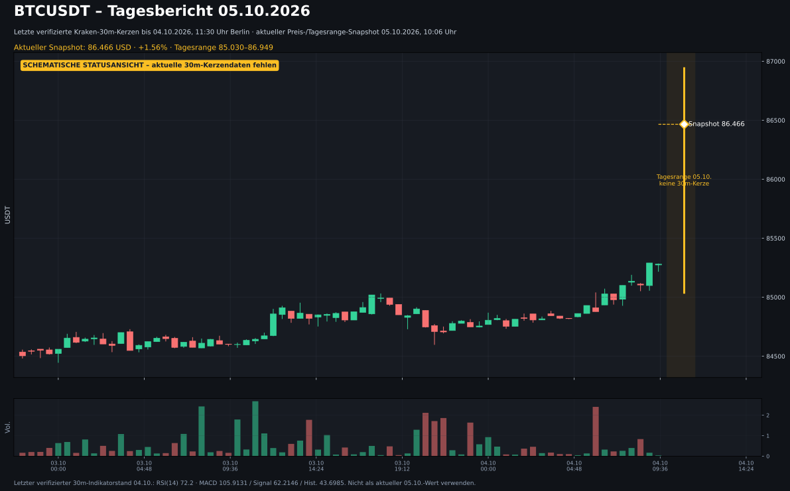
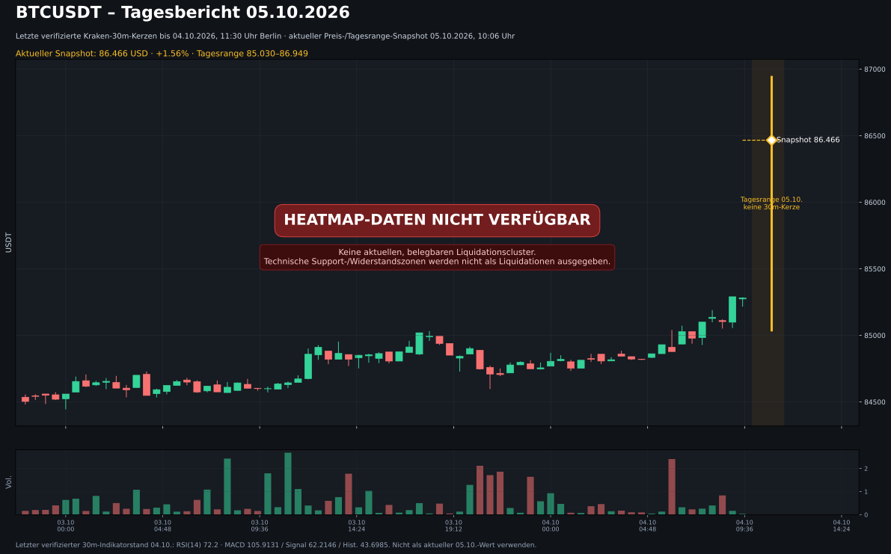
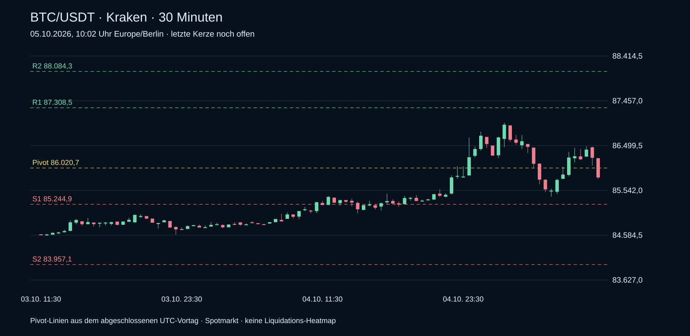

Tagesbericht 05.10.2026 · echte Kerzendaten
Binance Spot BTCUSDT / XRPUSDT. Abruf 05.10.2026, 12:12 Uhr Europe/Berlin. Hauptansicht 30 Minuten. Alle fünf Zeitebenen verfügbar; Indikatoren ausschließlich aus abgeschlossenen Kerzen.
Heatmap-Daten nicht verfügbar: CoinAnk verlangt eine Anmeldung; der Zugang zum Chart ist noch nicht bestätigt. Technische Marken sind keine Liquidationscluster.
BTCUSDT · 86,018.0000 USDT
30m: Tieferes Hoch / tieferes Tief. Support 85,412.0000 · Widerstand 86,498.5000 USDT. RSI(14) 48.8; MACD 60.0954, Signal 102.6147, Histogramm -42.5193. Letzte abgeschlossene 30m-Kerze: 05.10.2026 11:59:59 Berlin.
Excel-Tagesbericht BTC · Einzelansicht
| Zeitebene | Struktur | RSI | MACD | Support | Widerstand |
|---|---|---|---|---|---|
| 15m | Höheres Hoch / höheres Tief | 45.5 | -18.8028 | 85,776.5800 | 86,498.5000 |
| 30m | Tieferes Hoch / tieferes Tief | 48.8 | 60.0954 | 85,412.0000 | 86,498.5000 |
| 1h | Höheres Hoch / höheres Tief | 54.0 | 244.7036 | 85,412.0000 | 86,999.1100 |
| 4h | Seitwärts / gemischte Struktur | 63.9 | 448.5438 | 84,557.3600 | 86,999.1100 |
| 1d | Seitwärts / gemischte Struktur | 68.7 | 2016.0084 | 82,563.0000 | 87,278.5400 |
Bedingte Szenarien
Long: 30m-Schluss über Widerstand und erfolgreicher Rücktest bei 86,498.5000; Invalidierung / Stop 86,164.2029; Ziele 86,832.7971 / 87,167.0943 USDT.
Short: 30m-Schluss unter Support und gescheiterter Rücklauf bei 85,412.0000; Invalidierung / Stop 85,746.2971; Ziele 85,077.7029 / 84,743.4057 USDT.
Struktur: letzte 12 gegen vorherige 12 geschlossene Kerzen. Support/Widerstand: Extrempunkte der letzten 12. Stop-/Zielabstand: 1 / 2 × mittlere True Range der letzten 14 geschlossenen 30m-Kerzen. Keine pauschale Handelsaufforderung.
BTC · Echter 30m-Kurschart
SVG in Vollbild / herunterladen

BTC · Heatmap-Status mit aktuellem Kurschart
SVG in Vollbild / herunterladen

Quellen und Daten
Tagesstand 05.10.2026 · 05.10.2026, 10:02 Uhr
Aktuelle Kraken-Spotkurse und echte 30-Minuten-Kerzen. Technische Marken aus dem abgeschlossenen Vortag. Die ältere Heatmap steht separat unten.
BTC · 30-Minuten-Chart (10-Uhr-Snapshot)
Kraken Spot · echte Kerzen · Pivot-Marken aus dem UTC-Vortag

BTC/USDT · 85.818,5
-0,83 % zum Vortagsschluss
Tagesbereich (UTC): 85.407,6–86.990,1
Über SMA20 (82.889,4); unter Tagespivot 86.020,7
Support: S1 85.244,9 / S2 83.957,1
Widerstand: R1 87.308,5 / R2 88.084,3
Chart ohne Heatmap
Datenstand 03.10.2026

Chart mit Liquidation Heatmap
Datenstand 03.10.2026